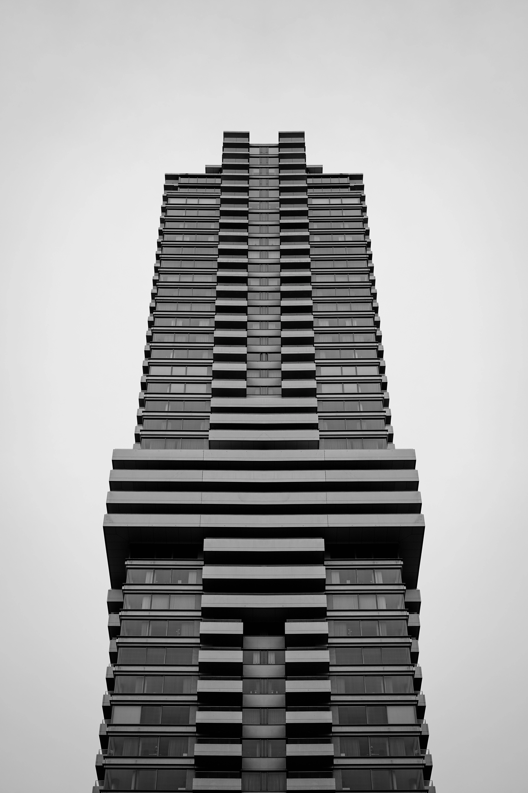

Stillness in Motion
A portrait and lifestyle series exploring quiet moments within everyday environments.

This project focuses on understated expressions and natural light, capturing subjects within familiar spaces to emphasize authenticity over performance.
The goal was to maintain visual consistency across the series while allowing each subject’s personality to remain unobstructed by heavy styling or dramatic post-processing.



Interested in a similar project?
Let’s collaborate or discuss a commission.
Get in touch